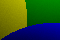
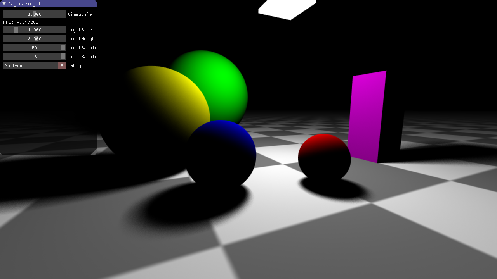

The 10 points you can reach in this Basic Exercise are BONUS POINTS!
Please print out Basic_Exercise_13_1.pdf and work on it on paper.
The finished tasks should be submitted via the Chair 9 post box (Cauerstraße 11, next to room 01.133-128)!
Please print out Basic_Exercise_13_2.pdf and work on it on paper.
The finished tasks should be submitted via the Chair 9 post box (Cauerstraße 11, next to room 01.133-128)!
The 10 points you can reach in this Advanced Exercise are BONUS POINTS!
In this exercise, we will use random sampling to increase the visual quality of a raytraced image. Geometric aliasing at object edges is removed by averaging multiple primary rays with different directions. Lighting of area light sources is approximated by sampling the light at multiple random positions.
In this task, we add anti-aliasing to our rendering by tracing multiple primary rays with a slightly different direction. This method is also known as Supersampling. We will use points generated from the (2,3) Halton Sequence as sample points.
The Halton Sequence is a sequence to generate points in space. The generated points are distributed more evenly across the space compared to pseudorandom points. The image below shows the first 10 Halton points in red, point 11 to point 100 in blue, and point 101 to point 256 in green.
To generate points in two (or more) dimensions, each coordinate is generated by a Halton sequence of a different base. For example, the image above was generated with the (2,3) Halton sequence. That means the x-coordinate uses base 2 and the y-coordinate uses base 3.
Implement the function float halton(int index, int base) in rt.glsl.
Use the pseudocode on the Wikipedia article as a reference.
The jittered primary ray is computed by adding a small random value to the normalized image space position of the fragment. The random value must be in the correct range, so that it does not overlap neighbouring pixels.
Everything has to be implemented in main() of rt.glsl.
pixelSamples iterations that traces the primary rays.position before the backprojection. Note: Use the uniform screenSize, which stores the window size in pixels. After this task the image should look like this (left: 1 sample per pixel; right: 16 samples per pixel): 
In this task we want to render realistic lighting from area light sources. For this purpose, the area light is sampled randomly and the light values for each sample are averaged. To compute pseudorandom numbers for each pixel, we use a simple Xorshift generator.
First, implement the function xorshift32() in rt.glsl.
The current seed is stored in the global variable seed.
Each call to xorshift32() should modify the seed, so that the next call returns a different random number.
Note: Use the example implementation from Wikipedia.
Later on, we need random floating point values instead of unsigned integers.
Implement the function rand() that uses the function xorshift32() and returns a float in the range [0,1].
Currently, for each pixel the same random numbers are generated.
To get per-pixel random numbers, the seed $s$ is initialized in the following way at the beginning of main()
($x$ and $y$ are the pixel locations stored in gl_FragCoord):
\[ s = y \cdot 15485863 + x \cdot 7919 \]
Set the debug dropdown in the GUI to "Random" to check if your per-pixel pseudorandom number generator works (Don't forget to set the samples per pixel to 1!). You should see white noise like the one on the left.
Similar to task 13.3 b), the area light is sampled at random positions and the final color is averaged over all samples. Everything has to be implemented in the trace function.
lightSamples iterations that samples the area light.-lightSize to +lightSize. After this task the image should look like this (top: lightSamples=1, pixelSamples=1; bottom: lightSamples=50, pixelSamples=16):
